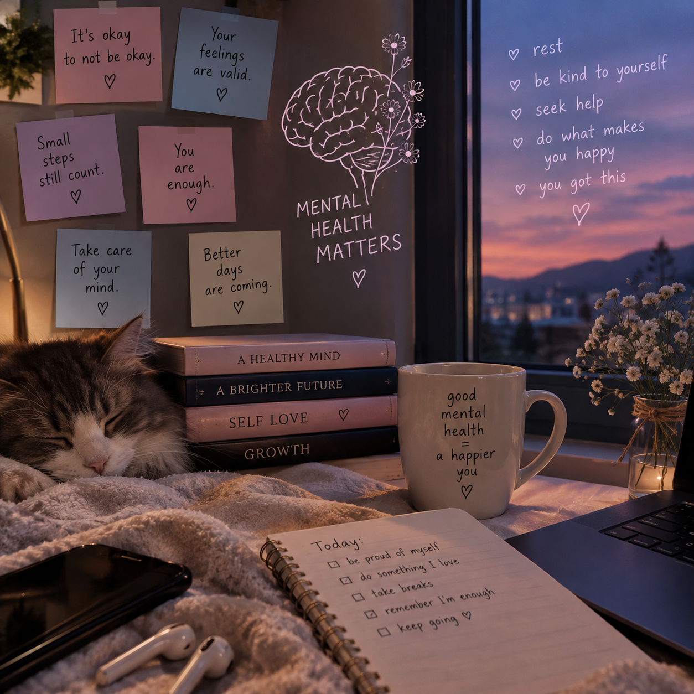
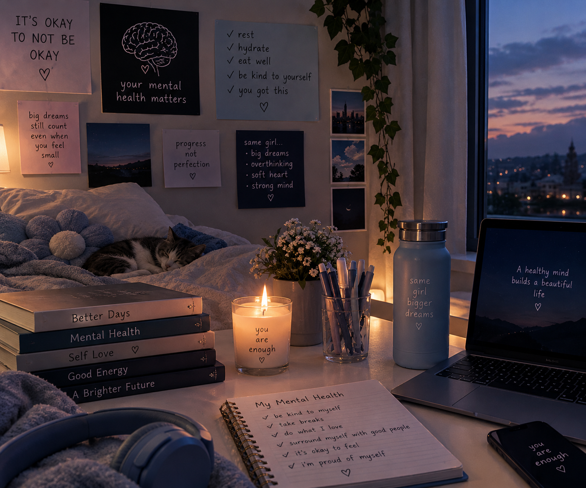
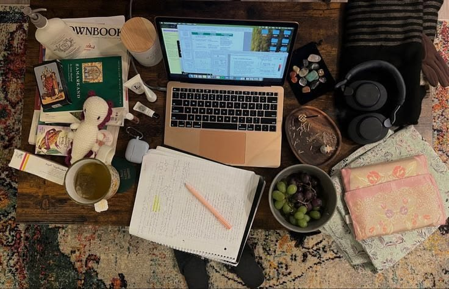
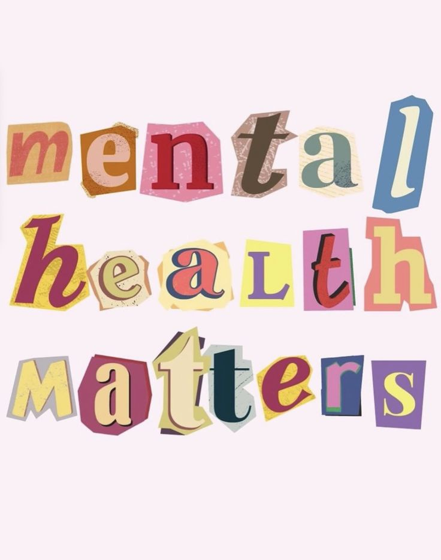
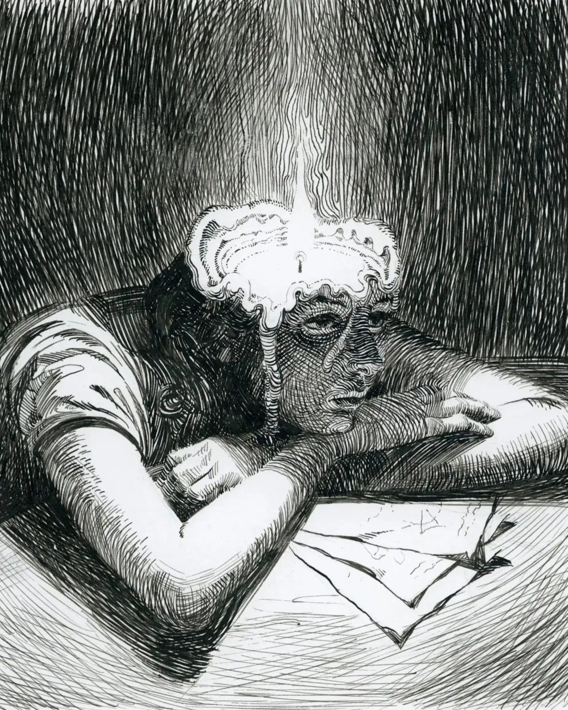
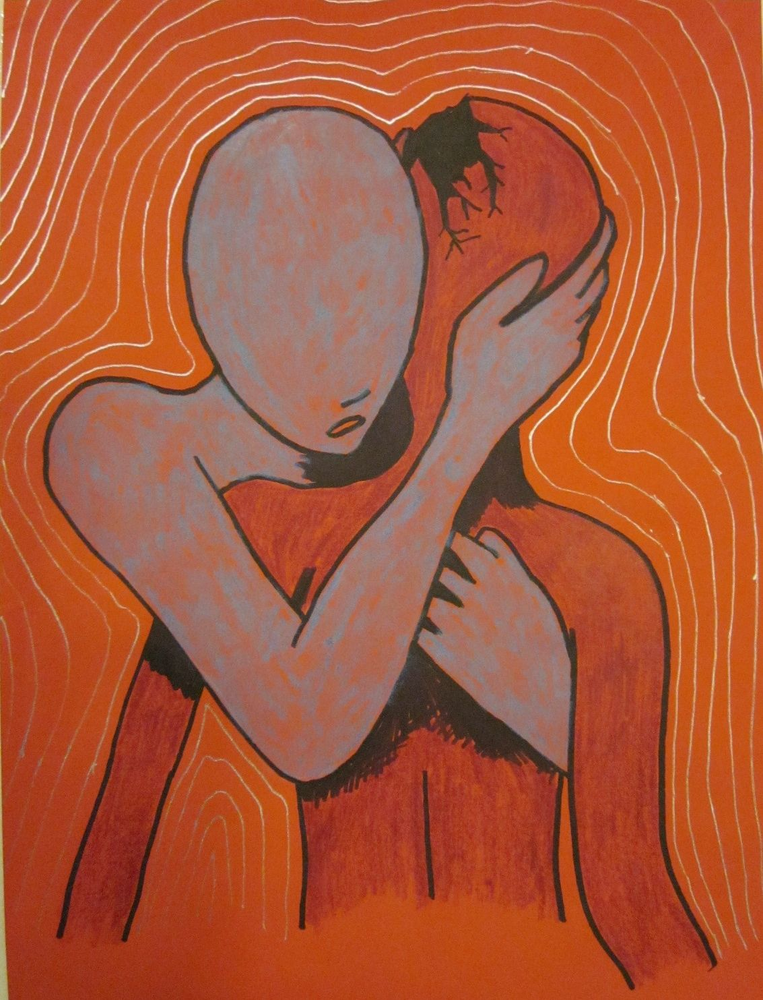
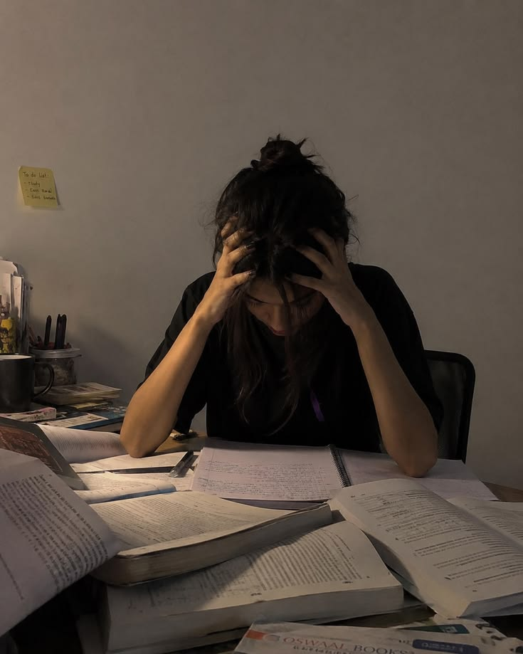
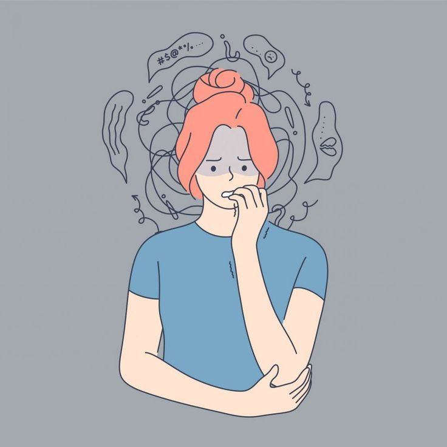

Pushimi
Pushimi i mjaftueshëm ndihmon në ruajtjen e shëndetit mendor.
PROJEKT SHKOLLOR • 2026
Kujdesi për mendjen është po aq i rëndësishëm sa kujdesi për trupin.
Fillo projektin ↓HYRJE
Shëndeti mendor është një pjesë shumë e rëndësishme e jetës së çdo njeriu. Ai ndikon në mënyrën se si mendojmë, ndiejmë dhe sillemi në jetën e përditshme.
Kujdesi për shëndetin mendor na ndihmon të përballojmë stresin, vështirësitë dhe sfidat e ndryshme të jetës.



PËRKUFIZIMI & RËNDËSIA
Shëndeti mendor është gjendja e mirëqenies emocionale, psikologjike dhe sociale të një personi.
Ai ndikon në mënyrën se si mendojmë, ndiejmë, sillemi dhe përballemi me vështirësitë e jetës. Ajo ka rëndësi shumë të madhe sepse ndikon drejtpërdrejt në jetën tonë të përditshme.
Një shëndet i mirë mendor na ndihmon të krijojmë marrëdhënie të shëndetshme, të përballojmë stresin dhe të marrim vendime më të mira.



KUJDESI
Duhet të kujdesemi për shëndetin mendor njësoj si për shëndetin fizik.
Pushimi i mjaftueshëm ndihmon në ruajtjen e shëndetit mendor.
Aktiviteti fizik është një nga mënyrat që ndihmojnë në kujdesin për të.
Komunikimi me njerëzit e afërt na ndihmon të ndihemi më mirë.
Kërkimi i ndihmës kur kemi nevojë është një hap i rëndësishëm.
Kujdesi për shëndetin mendor mund të përmirësojë cilësinë e jetës dhe mirëqenien tonë.
STRESI & ANKTHI
Stresi është një reagim i trupit dhe mendjes ndaj situatave të vështira, presionit ose problemeve.
Për shembull, një nxënës mund të ndiejë stres para një provimi ose kur ka shumë detyra.
Ankthi është një ndjenjë e fortë shqetësimi, frike ose pasigurie, shpesh edhe kur nuk ka një rrezik të menjëhershëm.
Ankthi mund të shfaqet përmes shqetësimit të vazhdueshëm, vështirësisë në përqendrim ose problemeve me gjumin.


FAKTORËT
TE NXËNËSI
Stresi dhe ankthi mund të ndikojnë në përqendrim, kujtesë dhe rezultate në mësime.
Nxënësi mund të ndihet i lodhur, nervoz, i shqetësuar ose të ketë vështirësi me gjumin.
Nëse këto gjendje zgjasin për një kohë të gjatë, mund të ndikojnë edhe në marrëdhëniet me familjen, shokët dhe mësuesit.